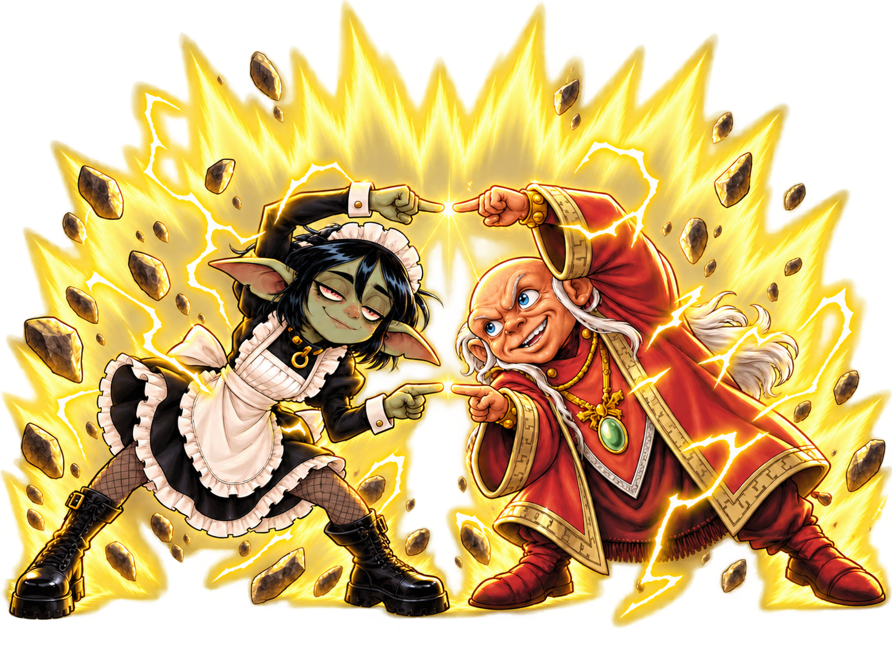

01 / К вашим услугам
У хорошего мастера
есть план.
И кто-то, кто помнит
все модификаторы.
Книги открыты. Герои готовы. Кто-то снова спрашивает про состояние «Напуган». Для таких моментов и нужна мейда: всё, что помогает вести Pathfinder 2e, собрано в одном приложении.
